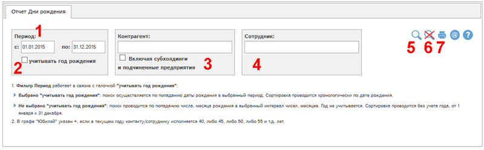
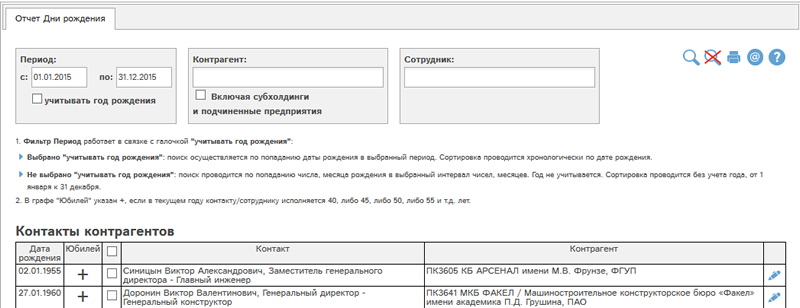

Отчет позволяет узнать, в какие дни происходят дни рождения у сотрудников и у контактных лиц контрагентов.

Рис. Форма отчета Дни рождения.
Доступны следующие фильтры и кнопки:
- Период - контактные лица и сотрудники отбираются в отчет при попадании даты рождения в указанный интервал. Фильтр работает совместно с галочкой 2:
- Учитывать год рождения:
галочка отмечена: поиск осуществляется по попаданию даты рождения в выбранный период. Сортировка проводится хронологически по дате рождения. Этот режим полезен, когда необходимо узнать, кто родился в определенные годы, например, с 1975 по 1980 год.
галочка не отмечена: поиск проводится по попаданию числа, месяца рождения в выбранный интервал чисел, месяцев. Год не учитывается. Сортировка проводится без учета года, от 1 января к 31 декабря.
Этот режим полезен, когда нужно узнать, у кого день рождения, например, в ближайший месяц.
- Отбор по контрагенту (одному или нескольким). Галочка "Включая субхолдинги и подчиненные предприятия" позволяет выбрать в отчет также данные по субхолдингам и подчиненным предприятиям выбранных контрагентов.
- Отбор по сотруднику (можно выбрать несколько сотрудников)
- Показать отчет по выбранным фильтрам
- Сбросить все фильтры
- Получить печатную версию отчета по выбранным фильтрам в pdf-формате.
Рассмотрим пример отчета со значениями фильтров по умолчанию. Для этого нажмем кнопку  :
:

В графе "Юбилей" указан +, если в текущем году контакту/сотруднику исполняется 40, либо 45, либо 50, либо 55 и т.д. лет.